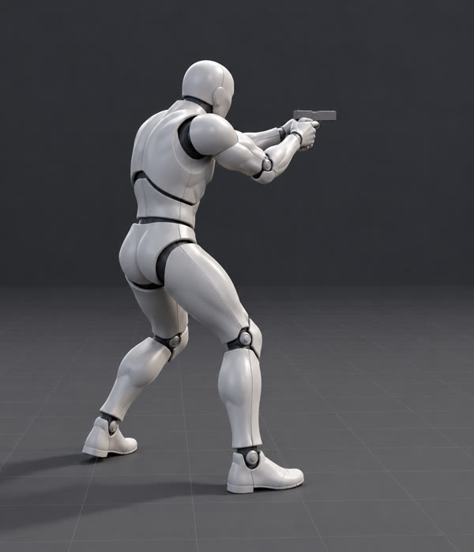

Photo view
Front
Left
Right
Back
Grip L
Grip R
Over shoulder
Fire (Space)
Auto fire
Slow-mo
Sound
Colliders
Demo move
IK / MM debug
Pistol ⇄
Reload (R)
Edit IK
▶ Aim game
Auto-rotate
Reference

Loading mannequin…
Edit IK pose
Click a handle
Move (T)
Rotate (R)
Reset handle
Reset all
Copy pose JSON
Offsets are layered on the animation and saved in this browser.
FIRE
AIM
R
⇄
RUN
II
⛶
TIME
60
SCORE
0
ACC
-
WEAPON
WASD move · Shift run · Mouse aim · LMB fire (hold = M4 auto) · RMB zoom / Kar98k scope · R reload · 1 / 2 / 3 weapon · Esc pause
16
/
15
Rotate to landscape for the best view ⟲
Aim trainer
Start
Exit